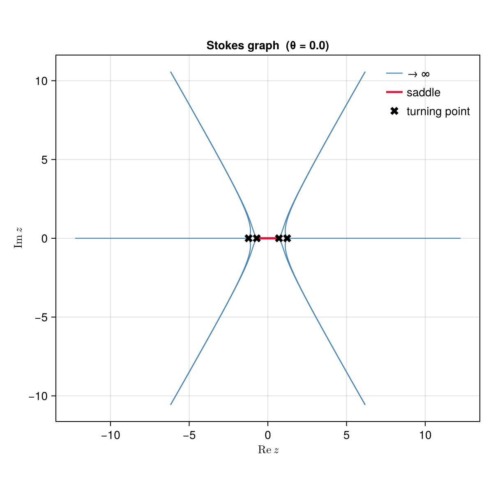
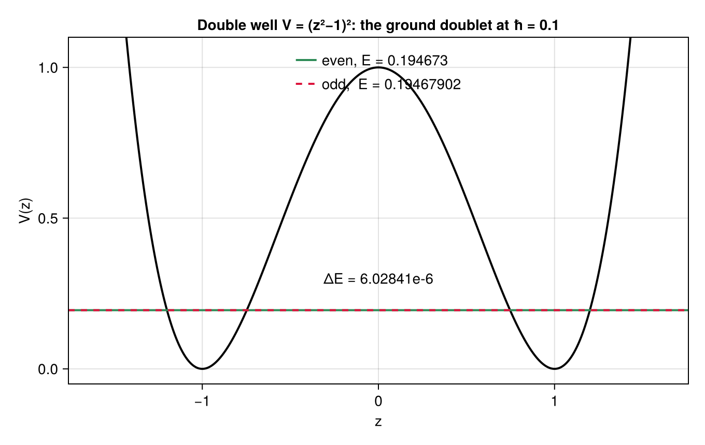
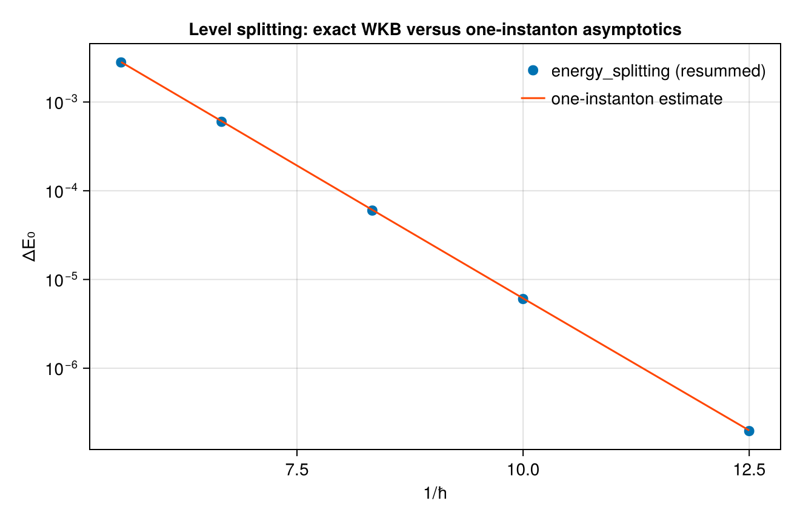
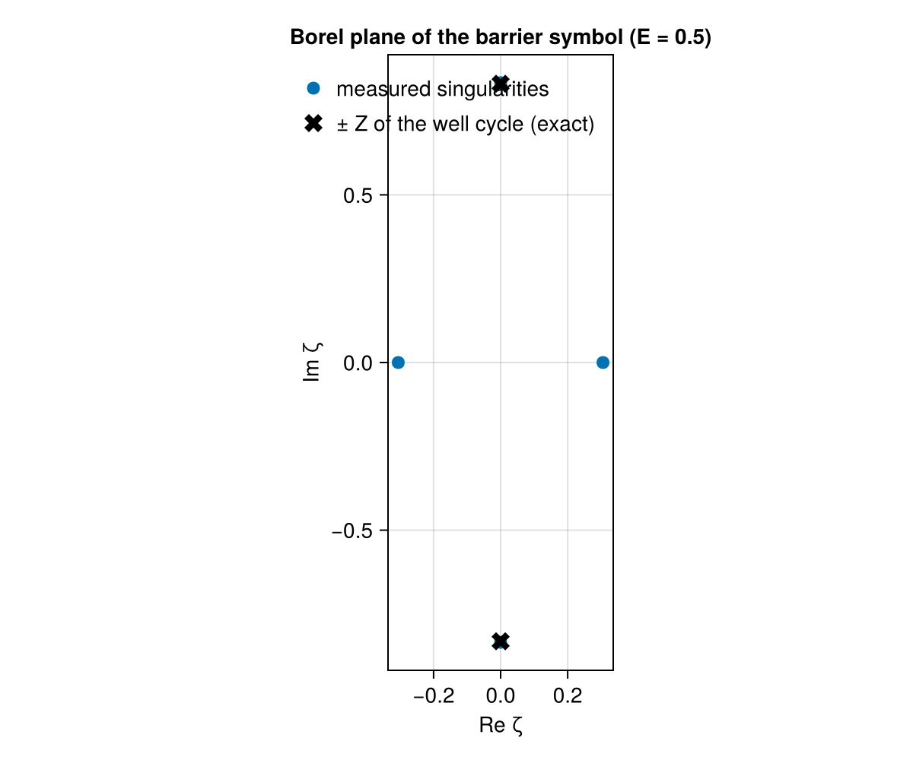

The double well
The research problem
A particle in a symmetric double well has two places to sit. Classically it picks one and stays there forever; quantum mechanically it tunnels, and the two would-be ground states mix into an even and an odd combination separated by a small energy gap $\Delta E$. Measuring that gap is measuring the tunnelling rate.
Perturbation theory cannot see it. Expand the ground-state energy in powers of $\hbar$ around either well and you get the same series for both members of the doublet, so the gap is zero to all orders. It is exponentially small, $\Delta E \sim e^{-A/\hbar}$, and no finite order of an expansion in powers of $\hbar$ contains such a term.
So:
How do you compute a quantity that vanishes to all orders of the only expansion you have?
The textbook answer adds instantons by hand: find the classical tunnelling solution, compute its action $A$, and multiply by a fluctuation determinant. That works and gives the leading behaviour. The exact-Wentzel-Kramers-Brillouin answer goes further: the perturbative series already contains the tunnelling information, in the pattern of its divergence, and both objects come out of the same computation. The perturbative series and the instanton series are not independent, but satisfy an exact differential relation.
This tutorial computes the gap, checks it against the instanton estimate, and then verifies that relation. Along the way it shows what the tunnelling looks like as geometry: a line in the complex plane connecting two turning points.
This is the same resurgence story as The cubic, end to end, with divergent series, a Borel plane and singularities at the actions of invisible objects, but here the result is a number a physicist would measure and the invisible object is an instanton. Seiberg-Witten SU(2) is the same structure one dimension up: the Mathieu potential is a periodic double well, and its two periods are the two series computed here.
A convention check first
Before trusting any of it, run the machinery on a problem whose answer is known exactly. For the harmonic oscillator $V = z^2$ the Wentzel-Kramers-Brillouin series truncates, since all higher corrections vanish identically, so the method must return $E_n = 2\hbar(n+\tfrac12)$ exactly and not asymptotically:
julia> using ExactWKB
julia> import Resurgence
julia> harm = SchrodingerProblem([0.0, 0.0, 1.0]);
julia> wkb_eigenvalue(harm, 0, 0.1; order = 6), wkb_eigenvalue(harm, 3, 0.1; order = 6)
(0.09999999999999994, 0.6999999999999995)Fifteen digits on both. Every sign, every factor of $2\pi$, and the placement of the $+\tfrac12$ in the quantization condition is pinned by this one line. It is the cheapest test available, and the package runs it in its own test suite for that reason.
Step 1: the potential, and a reported degeneracy
julia> dwell = SchrodingerProblem([1.0, 0.0, -2.0, 0.0, 1.0])
SchrodingerProblem (ħ²ψ″ = Q ψ, Q = V − E)
Q(z) = 1.0 - 2.0*z^2 + 1.0*z^4
E = 0.0
julia> turning_points(dwell)
2-element Vector{TurningPoint{Float64}}:
TurningPoint(-1.0 - 4.4254e-23im, order 2)
TurningPoint(1.0 - 3.1115000000000004e-33im, order 2)At $E = 0$ the energy sits exactly at the bottom of both wells, so the four turning points have collided pairwise into two double zeros. The package reports order 2 instead of four nearby simple points, and any function that needs simple turning points refuses this input with a typed error rather than tracing through a degenerate point.
Lift the energy and the degeneracy resolves:
julia> prob = with_energy(dwell, 0.25);
julia> turning_points(prob)
4-element Vector{TurningPoint{Float64}}:
TurningPoint(-1.2247 + 0.0im, simple)
TurningPoint(-0.70711 + 2.4309e-63im, simple)
TurningPoint(0.70711 + 4.8617000000000003e-63im, simple)
TurningPoint(1.2247 + 1.2154e-63im, simple)Two outer turning points, where the classical motion turns around, and two inner ones bounding the barrier.
Step 2: the instanton as geometry
The Stokes graph at angle $\theta = 0$ makes the rest of the tutorial concrete:
julia> g = stokes_graph(prob; theta = 0.0)
StokesGraph at θ = 0.0
turning points : 4
Stokes lines : 12 (10 to ∞, 2 saddle-traced)
saddle edges : (2, 3)
signature : (4, 10, [(2, 3)])
Ten lines escape to infinity and two do not: they join turning point 2 to turning point 3, the two ends of the barrier. That connection is the instanton, and it is visible as a piece of graph topology instead of being put in as an ansatz. saddles lists all such connections with their actions:
julia> saddles(prob)
3-element Vector{Saddle{Float64}}:
Saddle(1–2, |Z| = 0.40287, θ_c = 1.5708)
Saddle(2–3, |Z| = 1.8399, θ_c = 3.8763e-66)
Saddle(3–4, |Z| = 0.40287, θ_c = 1.5708)Three of them: one per well (action $0.403$, critical angle $\pi/2$) and one for the barrier (action $1.84$, critical angle $0$). Their angles differ by exactly $\pi/2$, which is the geometric reason the two effects separate so cleanly. The perturbative series lives on one ray of the Borel plane and the tunnelling on the other.
Step 3: the two cycles
Turning the machinery into a spectral method means letting the energy vary. spectral_cycles classifies the cycles at a given energy:
julia> cyc = spectral_cycles(dwell, 0.3)
3-element Vector{SpectralCycle{Float64}}:
SpectralCycle(:well, -1.2441 ↔ -0.67252)
SpectralCycle(:barrier, -0.67252 ↔ 0.67252)
SpectralCycle(:well, 0.67252 ↔ 1.2441)Two allowed regions, and the forbidden region between them. quantum_period runs the full expansion on either of them (pass the cycle itself, since here there is more than one of the :well kind):
julia> quantum_period(dwell, cyc[3], 0.3; order = 8)
VorosSymbol - quantum period ∮ S dz
classical v₋₁ = 3.2613e-16 - 0.48622im
quantum series: FormalSeries{ComplexF64}: -5.507747036226363e-16 - 0.2602076530591245im*ħ + 3.2862601528904634e-14 - 0.18336635781953703im*ħ^3 + 7.275957614183426e-12 - 0.7278166054729809im*ħ^5 - 1.160697138402611e-8 - 7.1768695019236475im*ħ^7 + O(ħ^9)
julia> quantum_period(dwell, cyc[2], 0.3; order = 8)
VorosSymbol - quantum period ∮ S dz
classical v₋₁ = -1.7005 + 2.1858e-16im
quantum series: FormalSeries{ComplexF64}: 1.2437132716233077 - 1.5543122344752192e-15im*ħ - 11.03975702252379 + 7.460698725481052e-14im*ħ^3 + 570.9633005980559 - 1.8189894035458565e-11im*ħ^5 - 72571.23867070675 + 5.334615707397461e-6im*ħ^7 + O(ħ^9)The well period is purely imaginary and the barrier period purely real, which is the two rays again. The barrier's classical part $-1.7005$ is the instanton action at this energy, and it reappears in Step 6 as the leading term of the series called $A$.
Step 4: eigenvalues from an exact quantization condition
The old Bohr-Sommerfeld rule makes the action a multiple of $\hbar$. The exact version replaces the action by the resummed quantum period and, for a symmetric double well, factorizes by parity:
\[\cos\varphi = \frac{\sigma}{2}\sqrt{\frac{V_A}{1+V_A}}, \qquad \sigma = \text{parity}\cdot(-1)^n,\]
where $\varphi$ is built from the well period and $V_A$ from the barrier period. The tunnelling term $V_A = e^{-A/\hbar}\cdot(\text{series})$ splits the two parities. Drop it and both members of the doublet collapse onto the same energy.
The condition itself is available as a residual, but usually you want its zero:
julia> quantization_condition(dwell, 0.3, 0.1; n = 0, parity = +1, order = 8)
-0.7666241320998459
julia> E_even = wkb_eigenvalue(dwell, 0, 0.1; parity = +1, order = 8)
0.1946729954639906
julia> E_odd = wkb_eigenvalue(dwell, 0, 0.1; parity = -1, order = 8)
0.19467902387304717Two levels agreeing to six digits and differing in the seventh. Here they are, drawn on the potential:

At this scale the two lines are indistinguishable. The gap between them is the quantity perturbation theory says is zero:
julia> energy_splitting(dwell, 0, 0.1; order = 8)
6.02840905655766e-6Six parts in a million, obtained without ever writing down an instanton. It appears because the quantization condition was Borel summed instead of truncated, and the summation sees the barrier period.
Each eigenvalue takes a few seconds in Float64 at order 8, and the splitting about twice that. The cost is the expansion, which is re-run at every Newton step. Raising order or working in BigFloat buys digits at proportionate cost.
Step 5: comparison with the instanton estimate
Linearizing the parity condition gives the textbook one-instanton estimate $\Delta E \approx \sqrt{V_A}\,/\,|d\varphi/dE|$, and every ingredient is available: instanton_a for the tunnelling series, perturbative_b for the perturbative one.
julia> for h in (0.1, 0.12, 0.15)
ΔE = energy_splitting(dwell, 0, h; order = 8)
E0 = wkb_eigenvalue(dwell, 0, h; parity = +1, order = 8)
δ = 1e-4
A = instanton_a(dwell, E0; order = 6)
dφdE = π * real(Resurgence.evaluate(perturbative_b(dwell, E0 + δ; order = 6) -
perturbative_b(dwell, E0 - δ; order = 6), h)) / (2δ)
VA = exp(-real(Resurgence.evaluate(A, h)))
println("ħ = ", h, " ΔE = ", round(ΔE; sigdigits = 6),
" one-instanton = ", round(sqrt(VA) / abs(dφdE); sigdigits = 6))
end
ħ = 0.1 ΔE = 6.02841e-6 one-instanton = 6.13171e-6
ħ = 0.12 ΔE = 5.98252e-5 one-instanton = 6.08478e-5
ħ = 0.15 ΔE = 0.000599225 one-instanton = 0.000608403Over a wider range the agreement is the straight line on a logarithmic plot that the exponential law predicts:

The splitting varies over orders of magnitude and the estimate tracks it to a couple of percent. The residual is physics and not numerical error: two-instanton effects and the perturbative corrections around the instanton, which the exact condition includes and the leading estimate drops. The exact-WKB number is the one to trust, since it is a resummation and not an asymptotic estimate.
Step 6: the two series and the relation between them
Now the structural result. The problem has two $\hbar$-series: the perturbative $B$, from the well cycle, and the instanton $A$, from the barrier.
julia> instanton_a(dwell, 0.3; order = 6)
FormalSeries{ComplexF64}: 1.7004952149108605 - 2.185751579730777e-16im*ħ^-1 - 1.2437132716233077 + 1.5543122344752192e-15im*ħ + 11.03975702252379 - 7.460698725481052e-14im*ħ^3 - 570.9633005980559 + 1.8189894035458565e-11im*ħ^5 + O(ħ^7)
julia> perturbative_b(dwell, 0.3; order = 6)
FormalSeries{ComplexF64}: 0.077383985679791 - 4.831571781737113e-17im*ħ^-1 + 0.04141333421470072 - 1.9326287126948452e-17im*ħ + 0.029183662243720702 + 6.785183320455502e-15im*ħ^3 + 0.11583561042886273 + 5.211020790109826e-12im*ħ^5 + O(ħ^7)$A$ starts at the instanton action $1.70049$ from Step 3 and $B$ at the perturbative action. Both diverge, and they are not independent. The Zinn-Justin-Jentschura relation, in the form given by Dunne and Ünsal, says
\[\frac{1}{\partial B/\partial E} = -c\,\hbar^3 \left.\frac{\partial A}{\partial \hbar}\right|_{B},\]
so the entire non-perturbative sector is determined by perturbation theory.
verify_zjj checks it order by order, fitting the constant $c$ instead of being told it:
julia> r = setprecision(160) do
verify_zjj(dwell, big(1)/2; order = 7, quad_rtol = 1e-20)
end;
julia> Float64(real(r.c))
1.5
julia> r.orders, Float64.(r.residuals)
([3, 5], [1.3359157290179344e-22, 5.693993336044132e-21])The fit lands on $c = 3/2$, the exact value for this potential, and the residuals at the next two orders vanish at the working precision, twenty digits. Two divergent series, one computed in the classically allowed region and one under the barrier, satisfy an exact differential relation. That is resurgence made concrete, and it is why the splitting could be computed at all without putting an instanton in by hand.
Step 7: the same fact in the Borel plane
The relation above has a geometric counterpart. Take the barrier series at $E = 0.5$ and ask where its Borel transform is singular:
julia> cyc = spectral_cycles(dwell, 0.5);
julia> vw = quantum_period(dwell, cyc[3], 0.5; order = 8); # a well cycle
julia> vb = quantum_period(dwell, cyc[2], 0.5; order = 12); # the barrier
julia> round(classical_period(vw); sigdigits = 8), round(classical_period(vb); sigdigits = 8)
(1.8041124e-16 - 0.83146318im, -1.1758665 - 3.8510861e-16im)
julia> P = Resurgence.pade(Resurgence.borel(quantum_series(vb)); reduce = true);
julia> round.(ComplexF64.(Resurgence.poles(P)); sigdigits = 6)
4-element Vector{ComplexF64}:
-0.305354 - 1.99506e-7im
0.305354 + 1.99506e-7im
-2.27694e-11 + 0.834605im
2.27694e-11 - 0.834605im
The conjugate pair at $\pm 0.8346\,i$ matches the well cycle's action $\mp 0.83146\,i$ to 0.4%. The barrier series diverges because of the well cycle and vice versa, which is the statement of Step 6 read in the complex plane instead of order by order.
One caveat, generic to this kind of measurement: the pair at $\pm 0.305$ is at the resolution limit of a rational approximation built from six coefficients. Padé approximants place their nearest poles well and their further ones badly, and intermediate orders can produce spurious poles that vanish again at higher order. Raise the order and the precision together before reading anything into a pole position. The cubic, end to end shows the converged version of the same measurement, where at order 20 in exact arithmetic the leading singularity sits on the exact action to three parts in ten thousand.
To look at the Borel plane directly, the plotting comes from Resurgence.jl:
using CairoMakie
Resurgence.plot_borel_plane(P; rays = [0.0])What was computed
From five coefficients:
- a Stokes graph in which the instanton is a visible edge joining the two ends of the barrier, with its action $1.84$ computed as a contour integral;
- the ground doublet at $\hbar = 0.1$, and a splitting of $6.03\times 10^{-6}$ that is zero to all orders of perturbation theory;
- agreement with the one-instanton estimate to a couple of percent across a range where the splitting varies by orders of magnitude, with the discrepancy attributable to effects the estimate omits;
- the Zinn-Justin-Jentschura relation between the perturbative and instanton series, verified to twenty digits with its constant $3/2$ fitted rather than assumed;
- the Borel singularities of each series sitting on the other cycle's action.
Scope: wkb_eigenvalue and energy_splitting handle a single well and a symmetric double well. Asymmetric wells, more than two wells, and complex spectra are not implemented. They need further quantization-condition layouts, not new machinery underneath.
Next: Seiberg-Witten SU(2), where the well-and-barrier structure becomes a periodic potential, the two series become the electric and magnetic periods of a gauge theory, and the tunnelling action becomes the mass of a magnetic monopole.